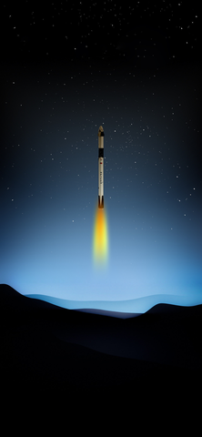

这是兴趣爱好 part

- 总有一天 人类会挣脱大地粗暴的束缚， 去触摸上帝的脸颊。
- 在探索位置的道路上，总有着无数人以路漫漫其修远兮，吾将上下而求索地精神，向着太空时代的到来并肩奋进。
-
(spacex星舰回收）
-
-
-
（中国航天发展史概况）


- “我们不想重复国外的老路，为的是奋力追赶拉大的距离。”--神舟飞船系统首任总设计师戚发轫
- 美国和前苏联早在冷战时期便投入了大量资金，人力以研究航天宇航技术，面对初期时与他国在技术上的极大差距，中国航天人选择的不是照搬外国已有的发展路线，照抄他国的技术原理，而是选择走自己的路，以期有一天能真正站在人类探索太空时代的前沿。而这注定就是一条难走的路，我们一路上走了很远的路，也遇到了许多挫折，但我们没有放弃。
- 从神一到神四，我们一步步搭建了中国人的“登天阶梯”。
- ——神舟一号飞船于1999年11月20日在酒泉卫星发射中心发射升空，飞船返回舱于次日在内蒙古自治区中部地区成功着陆。这次发射首次采用了在技术厂房对飞船、火箭联合体垂直总装与测试，整体垂直运输至发射场，进行远距离测试发射控制的新模式。我国在原有的航天测控网基础上新建的符合国际标准体制的陆海基航天测控网首次投入使用。
-
你可以点击 这里 了解更多关于神舟一号飞船的信息。
-

这是中国航天里程碑的一步，我们成功验证了飞船关键技术和系统设计的正确性及整个系统的协调性。
——神舟二号飞船于2001年1月10日发射升空，在轨飞行7天后成功返回地面。这是我国第一艘正样无人飞船。飞船上进行了微重力环境下的空间生命科学、空间材料、空间天文和物理等领域的实验，各种仪器设备性能稳定，工作正常，取得了大量数据。飞船的系统结构有了新的扩展，技术性能有了新的提高，飞船技术状态与载人飞船基本一致。

2000年11月12日，神舟二号飞船吊装现场，甘肃酒泉卫星发射中心。
——2002年12月30日0时40分，神舟四号飞船在酒泉卫星发射中心发射升空，还是由新型长征二号F捆绑式火箭承担发射任务，十几分钟后，飞船成功进入预定轨道。并按预定计划在太空飞行了6天零18小时，环绕地球108圈。

2002年12月，酒泉，酒泉卫星发射中心气象工作人员在“神舟”四号飞船发射前，对卫星云图进行科学分析。
神舟四号是我国成功发射的第三艘正样无人飞船，在这次飞行中，载人航天应用系统、航天员系统、飞船环境控制与生命保障分系统全面参加了试验，为神舟五号飞船的顺利发射奠定了坚实的基础。
——万众瞩目的一刻到来了，2003年10月15日上午9时整，我国第一艘载人飞船——神舟五号飞船在酒泉卫星发射中心由长征二号F运载火箭成功发射升空，9时10分，船箭分离，神舟五号载人飞船准确进入预定轨道。

2003年10月15日，中国第一个太空人杨利伟在返回舱内。
你可以点击 这里 了解更多关于神舟五号飞船。
（神舟五号飞船发射影像）